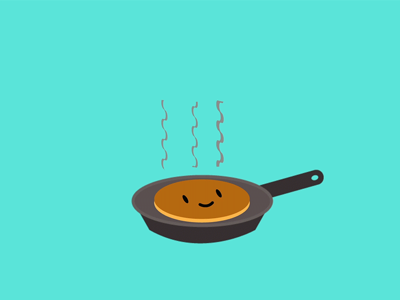

Pannkook
Retsepti link
Koostisosad:
- 4 muna
- 60g suhkrut
- 200g nisujahu
- näpuotsaga soola
- 5 dl piima
- 50g sulatatud võid
Valmistamine:
- Klopi munad suhkurga lahti
- Sega juurde jahu
- Lisa piim ja näpuotsaga soola ning sega ühtlaseks
- Lisa juurde või ning sega läbi
- Kuumuta pann ja lisa sobiv kogus tainast
- Küpseta mõlemalt poolt nii kaua kuni on mõlemad pooled kuldsed